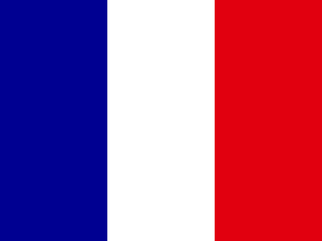

Geostarna
Ana sayfa
Ülkeler
Reunion
Çevre
Ülkeler
|
Sıralamalar
|
Veriler

Reunion: Çevre
Yükleniyor...
Kategoriler
Genel Bakış
Ekonomi
Nüfus
Ticaret
Kamu Maliyesi
Toplum
Çevre
Çevre
Sera Gazı Emisyonları
(CO2e)
i
Veri yok
-
-
Kişi Başına Sera Gazı Emisyonları
(CO2e)
i
Veri yok
-
-
Coğrafya
Yüzölçümü
(km²)
i
2.510
#174 / 229
2024
Orman Alanı
(Kara Alanının %'si)
i
Veri yok
-
-
© 2026 Geostarna